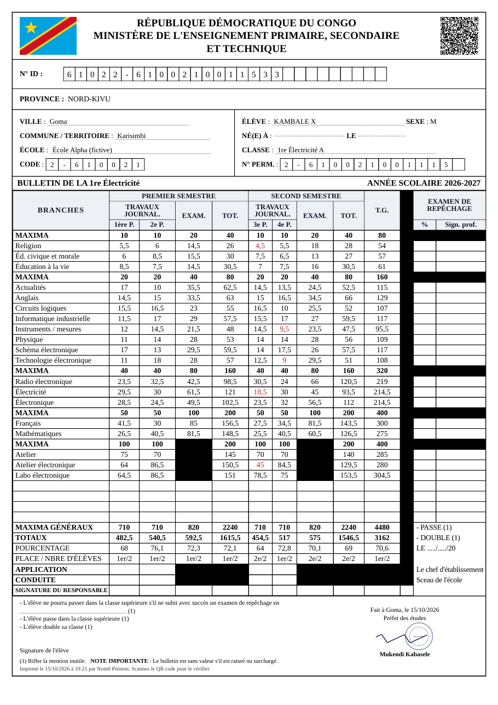

Bulletin
KAVIRA NZIAVAKE Esther · 1re Électricité B · année complète · validé le 02/07/2027

Impression (8.3.5)
Décalage horizontal : 0 mmvertical : 0 mm
Imprimer toute la classe
Un élève par feuille, en un seul PDF. Le calage est gardé sur l’appareil.
Formulaire officiel
7e – 8e EB
IGE/P.S/005 « 1re, 2e année secondaire »trouvé
IGE/P.S/005 « 1re, 2e année secondaire »trouvé
1re – 2e Électricité
IGE/P.S/100 « 3e, 4e année Électricité »affiché
IGE/P.S/100 « 3e, 4e année Électricité »affiché
1re – 2e Mécanique générale
IGE/P.S/094 « 3e, 4e année »trouvé
IGE/P.S/094 « 3e, 4e année »trouvé
1re – 4e Électronique
barème officiel 2009 (programme national)formulaire à obtenir
barème officiel 2009 (programme national)formulaire à obtenir
1re – 4e Mécanique automobileà obtenir
3e – 4e (toutes options)
« 5e, 6e année »à obtenir
« 5e, 6e année »à obtenir
Qui imprime (NB.8, 2026-10-27) : le directeur des études et le secrétariat (toutes les classes), le titulaire et le cotitulaire (leur classe seulement : choix de la classe limité à la leur ; liste des élèves donnée avec l'état du bulletin).
6.3 — calculs (d'après les formulaires officiels) : maximum de l'examen = 2 × maximum de la période ; total du semestre = 1re P + 2e P + examen (= 4 × maximum) ; T.G. = total 1er semestre + total 2d semestre. Cours pratiques (atelier, laboratoire, pratique professionnelle) : pas d'examen, cases grisées. Les branches sont regroupées par maximum (ligne MAXIMA). Pourcentage = totaux / maxima des colonnes remplies, 1 décimale. Place = rang dans la classe (ex æquo : même place). Note inférieure à la moitié du maximum en rouge (échec dans la branche). Mentions à biffer selon la délibération (6.4). Publié aux parents après validation seulement.
Bas du bulletin rempli par la délibération (8.4.3) : une fois la classe proclamée, la dernière version figée remplit le bas du formulaire — la mention gardée (« passe », « double », « repêchage dans… » avec les cours, « réorienté vers… ») et les autres biffées, la date de délibération, le nom et la signature du chef d'établissement et le cachet ; dans la colonne « Examen de repêchage », le pourcentage de chaque cours repêché et l'enseignant qui l'a signé. Classe pas encore proclamée : le bas reste vierge, à remplir à la main.
Questions pour l'ITIG (I15, Q10–Q11) : 1. Les formulaires officiels numérotent encore les classes à l'ancienne (« 3e année » = 1re des humanités ; « 1re année secondaire » = 7e EB) : même chose à l'ITIG ? 2. L'école remplit-elle le bulletin officiel pré-imprimé (acheté) — Mwangaza imprime alors seulement les notes aux bons endroits — ou peut-elle imprimer le bulletin complet ? 3. Code de l'école (7 chiffres), N° ID et N° permanent des élèves. 4. Mentions APPLICATION / CONDUITE utilisées (E, TB, B, AB, M…).